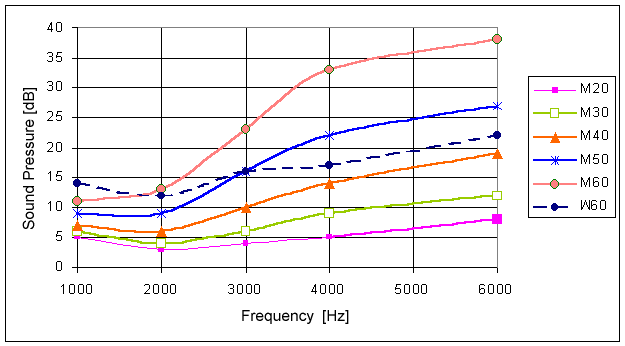

Inicio
Música
La ciencia del sonido
Relación Hombre-Sonido
Aplicación de tecnología en el sonido
Nuestro equipo
Ecualización
La música es el sonido de nuestras vidas
Rango de frecuencia auditiva para el ser humano
